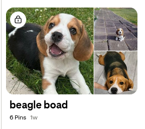
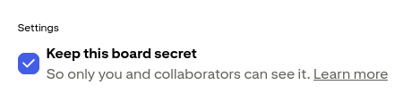
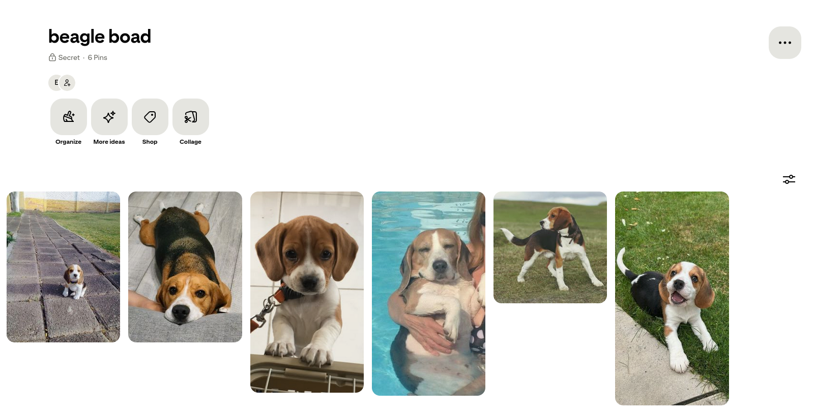
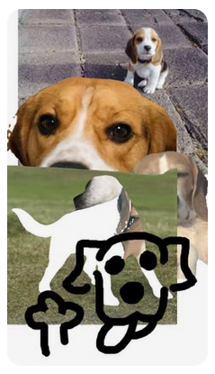

The user initially found a help page focused on the mobile app. It was later discovered that an account is required to create a board. The user navigated through several pages before locating the board creation page, showing considerable confusion throughout the task.

2 min 35 sec
Hard
Errors: 3
This task was straightforward since the user was already within the board. Making the board private required only a simple checkbox via the edit menu. Inviting a collaborator was equally simple: the user clicked an invite button next to a user's name. No errors were made.

1 min 10 sec
Easy
Errors: 0
The search bar was prominently displayed at the top of the screen, making it easy to locate and use. The user completed this task without any notable issues.
0 min 45 sec
Easy
Errors: 0
The user initially saved a pin to the default board before discovering a dropdown menu to select a specific board. Once the dropdown was found, saving to the correct board was straightforward.

1 min 50 sec
Medium
Errors: 1
Finding the collage feature took some effort, though it was located within the same area as board creation. Prior experience creating a board helped the user orient themselves. There was initial confusion about adding pins to the collage, but the system's intuitive design allowed the user to work through it. Naming and saving the collage was completed successfully, though the user noted that saving was slightly unclear at first.

3 min 20 sec
Hard
Errors: 2